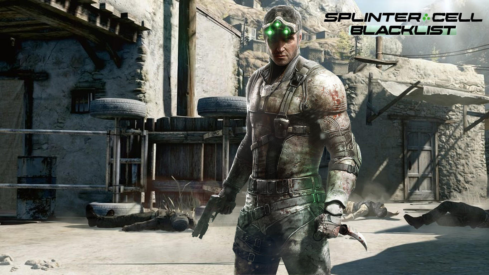

Splinter cell:Blacklist
Tom Clancy’s Splinter Cell: Blacklist — мультиплатформенная компьютерная игра в жанре стелс-экшен от третьего лица, шестая часть серии игр «Splinter Cell». «Blacklist» была разработана канадской компанией Ubisoft Toronto при участии Ubisoft Montreal и Ubisoft Shanghai и издана Ubisoft. Впервые игра была анонсирована 4 июня 2012 года на выставке E3 в Лос-Анджелесе. Игра была выпущена для игровых приставок PlayStation 3, XBox 360 и Wii U, а также для персональных компьютеров на базе Microsoft Windows.
Действие игры разворачиваются через полгода после окончания событий в Tom Clancy's Splinter Cell: Conviction. Главным героем игры является профессиональный агент Сэм Фишер, который становится во главе секретного подразделения АНБ «Четвёртого Эшелона», чтобы таким образом спасти Соединённые Штаты Америки от нависшей угрозы. Главного героя озвучил Эрик Джонсон, в то время как в русской версии игры его озвучил Валерий Сторожик. На территории России и СНГ игра вышла полностью на русском языке[2].
Игра вышла 20 августа 2013 года в Северной Америке, 23 августа 2013 года в Европе,[3] в России 29 августа[4].